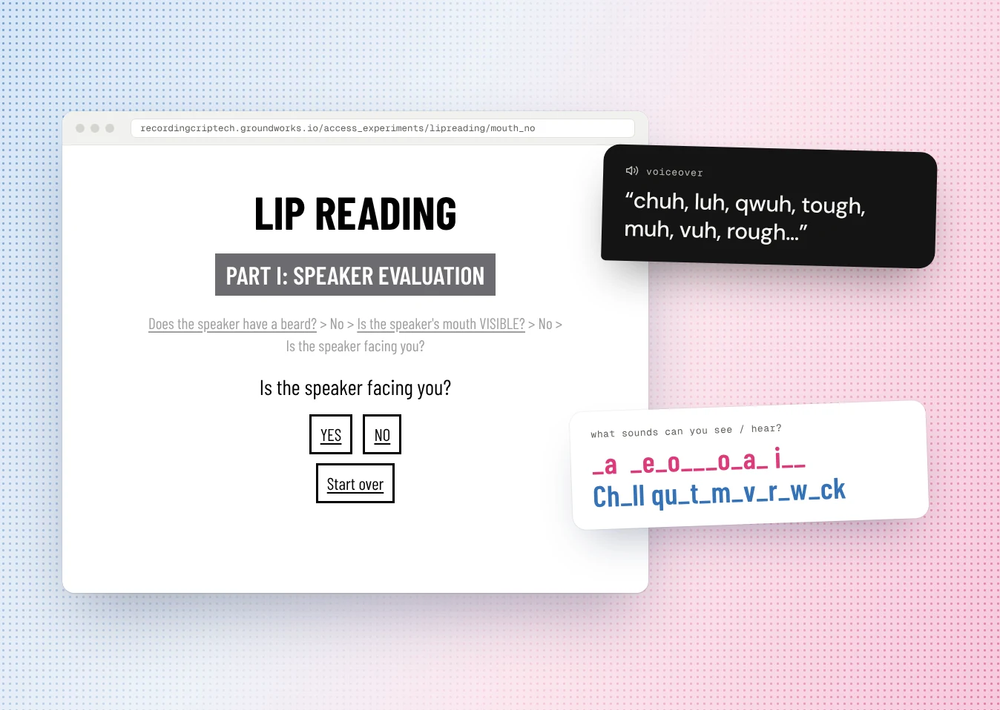
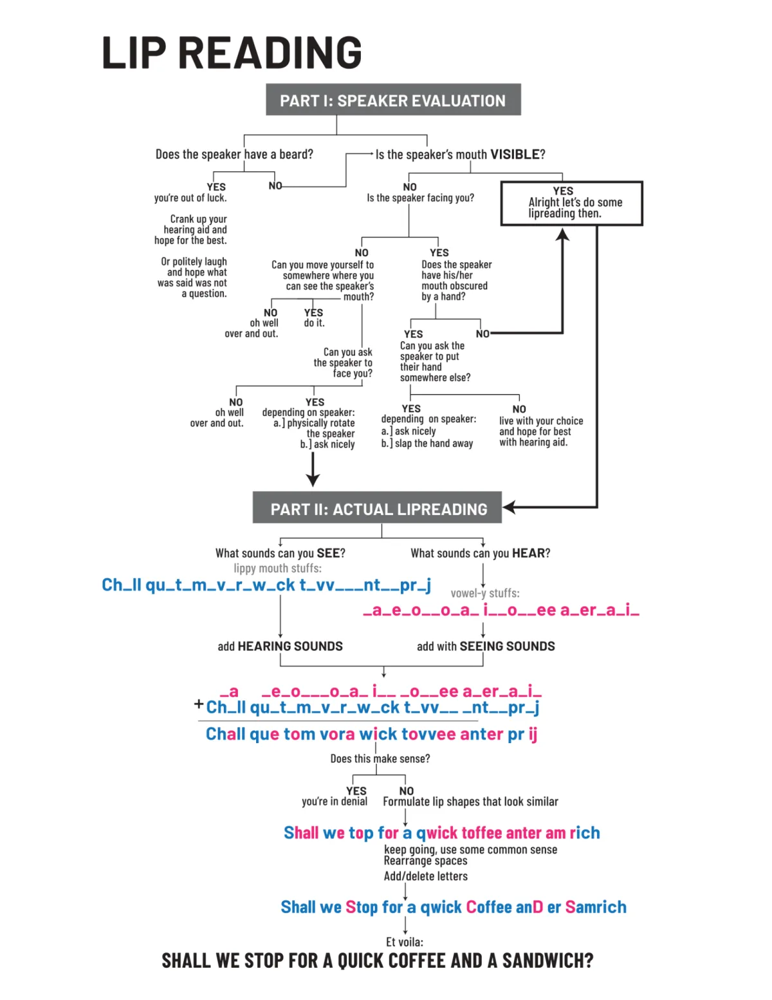
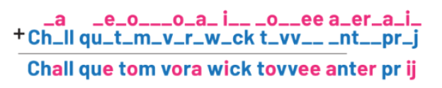
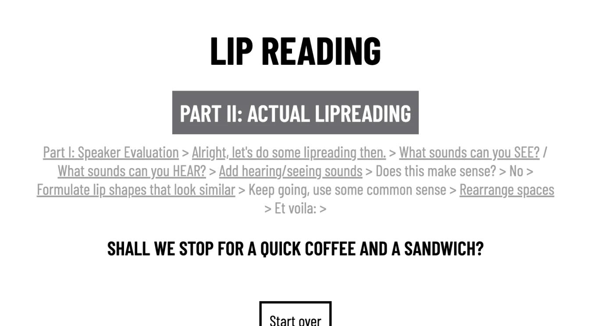

Lip Reading:
Making a flowchart about lipreading playable by ear
Overview
I turned Olivia Ting's choose-your-own-adventure poster about lipreading into 22 linked web pages, so a blind or low-vision visitor can move through it choice by choice and arrive at the punchline themselves.
Olivia Ting is a hard of hearing artist. Her installation Song Without Words showed at the E.A.A.T. exhibition at UC Irvine's Beall Center from September 2023 to January 2024, and beside it hung "Lip Reading": a deadpan flowchart of everything it takes to understand a single sentence.

"Lip Reading" © Olivia Ting.
Part I: Speaker Evaluation asks whether lipreading is even possible. Beard? You're out of luck. Hand over the mouth? Slap the hand away. Part II: Actual Lipreading stitches together the sounds you can see and the ones you can hear, guesses, rearranges the spaces, and lands on: "Shall we stop for a quick coffee and a sandwich?"
Reco(r)ding CripTech, a process archive built by a2ru with Leonardo/ISAST, was bringing this work online. The team framed certain artifacts as access experiments: a chance to go past the original format instead of describing it from outside. This flowchart was one of two.
The problem
The meaning lives in the choosing. The standard fixes all flatten it.
A flowchart is a picture, so the usual move is to describe it. Each option I considered gave up the thing that makes the piece work:
Summarises the chart from outside it. You hear what the joke is instead of walking into it.
Needs one reading order. A branching diagram doesn't have one — that's the point of it.
"Ch_ll qu_t" is read aloud as "C, H, underscore, L, L." The fragments stop sounding like speech.
So: how might we let screen reader and keyboard users play the flowchart, rather than be told about it?
One poster, rebuilt as 22 linked pages
I gave every box on the poster its own page, and every answer its own link. Seven dated builds over four weeks, from the first pass on 13 February 2024 to the version handed off on 11 March.
My first prototype made each question a set of radio buttons with a Submit button and a JavaScript redirect. It worked, but it put a form between the reader and a question that only ever had two answers — and it depended on script to go anywhere.
I replaced it with plain <a href> links styled as boxes. Links are focusable and announced by a screen reader with nothing else attached. The final build has no JavaScript in it at all.
The styling follows Ting's poster rather than my own taste: Barlow Condensed, centred, the part title reversed out of a gray banner, and each choice a box with a 3px black border.
Every dead end gets an exit
The poster is full of jokes that stop you dead — "you're out of luck," and so on. On paper your eye just wanders back. In a browser, a dead end with no way out is a trap.
- Start over appears on all 22 pages, and returns to the first question.
- Go back appears only on the six dead ends, and returns to the question that sent you there.
Ordinary question pages don't get a Go back, because the breadcrumb above them already links to every previous question. Adding one would mean two controls doing the same job on the same page.
Voicing sounds a screen reader wants to spell
Part II is where the piece does its real work. It shows the sounds you can see on a speaker's lips in blue, the ones you can hear in pink, and asks you to assemble a sentence out of the fragments. The fragments are single letters and letter pairs — and a screen reader reads letters as letters.
I tried four approaches:
VoiceOver spelled it out: "C, H." The fragment stopped being a sound.
Closer, but VoiceOver announced "chuh, group: ch" — the label and the letters both — and the custom spacing was lost.
The precise tool for this, and not supported in HTML5.
The fragments became images, and the alt text spelled them the way they sound. One clean announcement, and the spacing of the original is preserved as part of the picture.
I tested the spellings in VoiceOver and chose whatever actually sounded right, which was not always the obvious transcription: ch became "chuh", qu became "qwuh", and t and r became "tough" and "rough" rather than "tuh" and "ruh".
Sounds you can see. Read aloud as: chuh, luh, qwuh, tough, muh, vuh, rough, wuh, cuh, tough, vuh, ent, pruh, juh.
Sounds you can hear. Read aloud as: ah, ee, ah, oh, ah, ih, ah, ee, a, er, a, ih.
What a listener actually hears
Put together, the two sets of fragments become something you can almost read — and then, after a nudge about lip shapes and a rearranging of the spaces, something you can.

Both sets added together.
Swapped for lip shapes that look the same from outside.
Spaces rearranged.

The last page, with the whole path still visible above the answer.
The flowchart is live in the archive beside the poster it translates.
What I'd fix, looking back at my own code
This is an accessibility project, so it should be held to its own standard. Reading my 2024 build now, four things fall short:
Links turn gray on hover and focus, which lands at 2.7:1 against white — below the 4.5:1 minimum, and on the one state a keyboard user depends on. It should invert the box and add a visible focus ring.
Four pages carry a <title> and a declared language. The rest announce nothing useful on load, and leave the screen reader to guess pronunciation. Both belong on all 22.
The blue and the pink each pass against white, but they sit at 1.16:1 against each other — so the distinction carrying Part II's meaning disappears for a colour-blind reader. It needs a second cue: weight, an underline, or a label.
It behaves like a breadcrumb but it's a <div> of paragraphs and links, so a screen reader can't skip to it or announce what it is. It should be a <nav aria-label="Breadcrumb"> wrapping an ordered list.
Reflection
The brief could have been met with a paragraph of alt text. It would have been compliant and it would have thrown away the piece. What made this worth doing was treating the joke as the thing to preserve.
ARIA labels are the textbook answer for "make this announce differently," and in VoiceOver they announced both the label and the letters underneath. I only learned that by listening. The documented fix and the working fix weren't the same.
The scripted form was the more sophisticated build. Plain links were more robust, more navigable, and needed no JavaScript to work at all.
Where I'd take it next: fix the four audit items in the build itself, test with blind and low-vision readers outside the team, and record the sound fragments as audio with Ting rather than approximating them in text. "Sorting It Out," the companion flowchart, is still waiting for the same treatment.
Flowchart artwork © Olivia Ting. Built for Reco(r)ding CripTech, a process archive by a2ru with Leonardo/ISAST. With Daragh Byrne (Carnegie Mellon), Veronica Stanich (University of Michigan), and Luke Kudryashov, who reviewed it for accessibility.
Thank you for reading! If you have any questions about this project, feel free to email me at bridgit.jung@gmail.com! ✶⋆.˚
next project FreshHold Managing and keeping food fresh